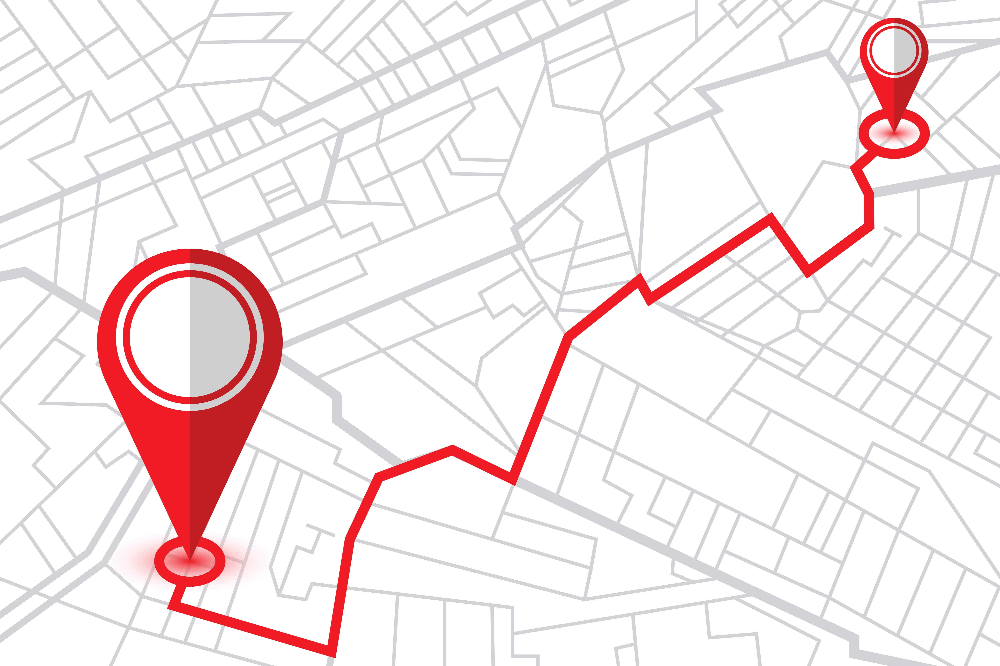

Localisation

La localisation permet de savoir où l’on se trouve grâce à des technologies comme le GPS.
1. Qu’est-ce que le GPS ?
Un système de satellites
Il donne des coordonnées géographiques (latitude et longitude)
Il est intégré dans les téléphones, voitures, montres...
2. Utilisations
Applications de cartographie (Google Maps)
Suivre un trajet ou une livraison
Géolocalisation des photos
3. Enjeux
Vie privée : savoir où tu es
Applications : elles peuvent enregistrer tes déplacements
← Retour à l'accueil